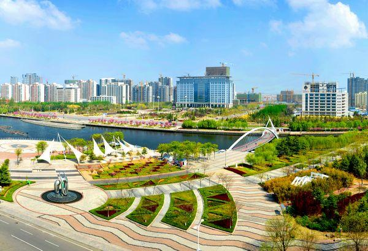

ME |
HOMETOWN |
|||
|  | ||||
李东儒，男，2004年出生，至今未婚，现就读于华中科技大学计算机科学与技术学院，你看到的是他的大一实践课作业 |
胶州市，山东省辖县级市，由青岛市代管，地处山东半岛东南部，胶州湾西北岸、黄海之滨，介于北纬36°00′—36°30′，东经119°37′—120°12′之间，东邻城阳区、即墨区，西靠高密市、诸城市，南接黄岛区，北连平度市，总面积1324平方千米 [1] [83] [87]。截至2022年10月，胶州市辖8个街道、4个镇 [94]。截至2022年末，胶州市常住人口为103.36万人。胶州因东南临胶州湾，以胶水而得名；拥有5000多年历史，唐朝于境内设立板桥镇，北宋时期港盛州兴，海运贸易持续繁荣，是长江以北的对外通商口岸、全国五大商埠之一、“海上丝绸之路”的重要节点，素有“金胶州”之美誉；是中国民间文化艺术之乡、中国秧歌之乡、中国剪纸之乡 [87]。胶州是山东半岛联结海内外的重要交通咽喉，拥有国家级经济技术开发区、山东省的4F级国际机场、国家级临空经济示范区、空港综合保税区，常态化开行24条国内国际班列，通达上合组织和“一带一路”沿线数十个国家。 |
|||